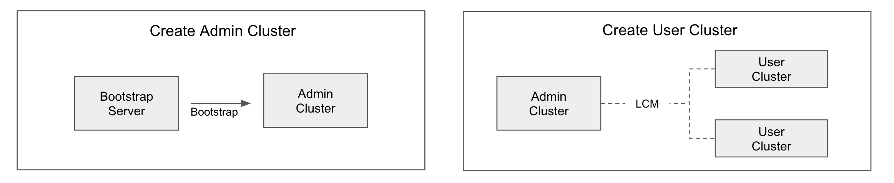

Quick Start¶
Summary¶
- release 1.0.0 기준
- AWS 기준
TKS는 Cluster API를 활용하여 Public Cloud Infra를 제어 한다. Admin Clutser는 Public Cloud를 제어하고, Decapod가 설치되어 User Cluster를 생성하고 User Clutser에 설치되는 Service를 설치관리하는 주체다. TKS는 Admin Clutser를 쉽게 구축할수 있는 Bootstrap Server를 제공한다. Bootrap Server는 Admin Cluster를 추국하기 위핸 Artifect를 가지고 Admin Cluster를 생성한다. Bootstrap Sever는 Admin Clutser 생성 후, 그 용도가 없을으로 삭제해도 된다. Admin Clutser 생성 후, Admin Cluster는 TKS의 기능을 gRPC API로 제공한다. 또한 기본적으로 gRPC를 호출하는 CLI를 제공함으로 사용자는 CLI를 통해 User Cluster를 생성하고, 생성된 User Cluster에 Service를 생성 할 수 있다.

Prerequsition¶
TKS를 설치하기 위해서는 몇가지 미리 준배해야 할 사항이 있다.
- Bootrap Server : Ubuntu 20.04 , 최소 설치 필요 CLI Tool : vim, git, curl
- TKS 사용을 위한 AWS policy 생성: tks-capa.json, tks-node.json, tks-ec2.json, tks-s3.json
- TKS 사용을 위한 AWS policy가 적용된 AWS IAM User 생성 및 ACCESS KEY 생성 (ID, KEY Pair)
- GitOps를 위한 Github Account 생성 (Quick Start는 Test요으로 Public Repo 사용가능. 상용일 경우 Private Repo 생성 필요. 별도 Github Plane 가입필요함)
- Github Account 토큰
- Node들이 사용할 ssh pem 생성 후, AWS에 등록 (e.g quickstart)
Admin Clutser Bootstrap¶
Bootstrap Server를 설치하고 Admin Cluster를 설치한다.
- Ubuntu 20.04 기준 Linux Machine 설치 후, 필요한 CLI Tool 설치
- Bootstrap을 실행 하기 위한 script download
git clone https://github.com/openinfradev/tks-mgmt-cluster-deploy.git -b release-v2 -
Pem 파일 생성 : AWS에 등록한 이름과 같은 이름으로 생성
cd tks-mgmt-cluster-deploy/ vi quickstart.pem sudo chmod 400 quickstart.pem -
Bootstrap script 실행을 위한 설정 : conf.sh
conf.sh의 {}에 설치 환경에 맞게 값 변경cp conf.sh.example conf.shTKS_RELEASE=v2.0.0-rc1 CAPI_INFRA_PROVIDER="aws" # aws or openstack # when 'aws' is an infrastructure provider AWS_REGION={Admin Cluster 설치 Region} AWS_ACCESS_KEY_ID={AWS ACCESS KEY ID AWS_SECRET_ACCESS_KEY={AWS ACESS KEY} GITHUB_USERNAME={미리 만든 Github Accunt(Organization) Name} GITHUB_TOKEN={미리 만든 Github Accont(Organization)의 TOKEN} - Admin Cluster Spec 설정:
aws-admin.vo의 {}에 설치환경에 맞게 값 변경cd helm-values/ cp example-aws-admin.vo aws-admin.vosshKeyName: quickstart cluster: name: {Your value} region: {Your value} kubernetesVersion: v1.22.8 podCidrBlocks: - 192.168.0.0/16 bastion: enabled: true instanceType: t3.micro baseOS: ubuntu-20.04 kubeadmControlPlane: replicas: 3 controlPlaneMachineType: t3.large rootVolume: size: 20 type: gp2 machinePool: - name: {Your value} machineType: t3.2xlarge replicas: 3 minSize: 1 maxSize: 10 rootVolume: size: 200 type: gp2 subnets: [] labels: taco-tks: enabled - Admin Cluster Bootstrap Script 실행
asset-YYYY-MM-DD 이름을 갖는 Directory가 생상되고 Admin Cluster 생성을 위한 Artifacts 이 다운로드됨.cd .. ./01_prepare_assets.shBootstrap Sever는 Cluster API를 사용하여 Admin Cluster를 생성 함. 따라서 K3S를 설치하게 된다. 아래와 같이 동작 확인가능하다../02_create_bootstrap_cluster.sh assets-YYYY-MM-DD설치된 K3S에 Cluster API for AWS provider를 설치한다.kubectl --kubeconfig ~/.kube/config get node NAME STATUS ROLES AGE VERSION ip-???-??-??-??? Ready control-plane,master 2m50s v1.23.5+k3s1AWS에 Admin Cluster로 사용한 K8S Cluster를 생성한다../03_initialize_capi_providers.sh assets-YYYY-MM-DD
Admin Clutser용 K8S Cluster 동작확인./04_create_tks-admin_cluster.sh assets-YYYY-MM-DD ./helm-values/aws-admin.vo
Admin Cluster에 접근하기 위핸 Kubeconfig 화일이 kubeconfig_{정의한이름} 으로 생성됨kubectl --kubeconfig ~/.kube/config get awscluster -A
Decapod 설치kubectl --kubeconfig kubeconfig_{정의한이름} get node NAME STATUS ROLES AGE VERSION ip-10-0-120-101.ap-northeast-2.compute.internal NotReady <none> 13m v1.22.8 ip-10-0-126-250.ap-northeast-2.compute.internal NotReady control-plane,master 14m v1.22.8 ip-10-0-173-233.ap-northeast-2.compute.internal NotReady <none> 13m v1.22.8 ip-10-0-191-126.ap-northeast-2.compute.internal NotReady control-plane,master 12m v1.22.8 ip-10-0-214-182.ap-northeast-2.compute.internal NotReady <none> 13m v1.22.8 ip-10-0-222-105.ap-northeast-2.compute.internal NotReady control-plane,master 15m v1.22.8
Keycloak 설치./05_install_decapod.sh assets-YYYY-MM-DDIngress Controller설치./05_z1_install_keycloak.sh생성된 Admin Clutser가 스스로를 Cluster API로 management하게 Pivoting./05_z2_install_nginx_ingress.shAdmin Cluster의 Bastion node의 IP을 얻을 수 있음을 확인할 수 있다../06_make_tks-admin_self-managing.sh quickstart.pem ... ... === Finished. Check the status of all cluster API resources in the admin cluster and use the bastion host: 999.999.999.999 ===
Admin Cluster Postconfig¶
Admin Cluster를 사용하기 위해 CLI tool을 Admin Cluster의 Bastion node에 설치 하고, Admin Cluster의 GitOps 설정을 완료한다. Admin Cluster의 Bastion Node로 Login
ssh -i quickstart.pem ubuntu@999.999.999.999
curl -LO "https://dl.k8s.io/release/$(curl -L -s https://dl.k8s.io/release/stable.txt)/bin/linux/amd64/kubectl"
sudo install -o root -g root -m 0755 kubectl /usr/local/bin/kubectl
cp ~/tks-mgmt-cluster-deploy/ kubeconfig_{설정한값} ~/.kube/config
curl -fsSL -o get_helm.sh https://raw.githubusercontent.com/helm/helm/main/scripts/get-helm-3
chmod 700 get_helm.sh
./get_helm.sh
kubectl create ns tks
kubectl label no ip-10-0-120-101.ap-northeast-2.compute.internal taco-tks=enabled
helm repo add tks https://openinfradev.github.io/helm-repo
helm repo update
helm install tks-contract tks/tks-contract -n tks
helm install tks-info tks/tks-info -n tks
helm install tks-cluster-lcm tks/tks-cluster-lcm -n tks
helm install tks-batch tks/tks-batch -n tks
CLI Install
CLI Config
CLI 동작확인
tks cluster list